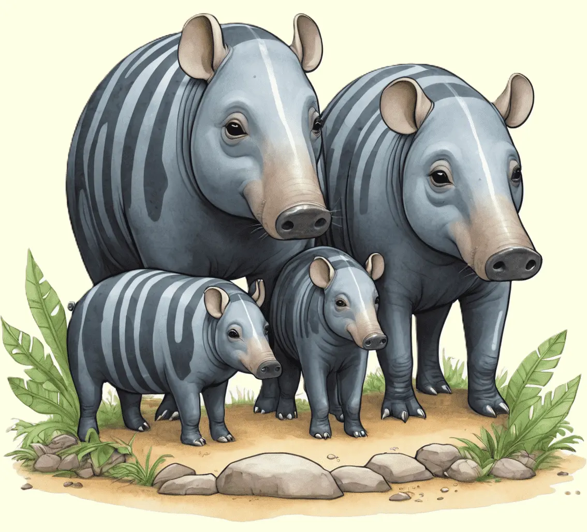

Der Tapir, ein faszinierendes Säugetier, beeindruckt mit seiner ungewöhnlichen Rüsselnase und seiner gemütlichen Art
Erkunde die liebenswerte Welt dieser Tiere und erfahre, wie sie in den dichten Wäldern und Feuchtgebieten Südamerikas leben.

Einblick in das Leben dieser Urzeitgiganten
Tapire sind faszinierende pflanzenfressende Säugetiere, die in den tropischen Regenwäldern, Grasländern und Feuchtgebieten Südamerikas beheimatet sind. Diese imposanten Tiere haben einen massigen Körper, einen kurzen Rüssel und auffällige, oft zweifarbige Fellmuster. Ihr Rüssel, auch "Proboscis" genannt, erinnert an den eines Ameisenbärs und ist äußerst flexibel. Tapire nutzen ihren Rüssel, um Blätter, Früchte, Zweige und Gräser zu greifen und sie zum Verzehr in ihren mächtigen Gebiss zu führen. Obwohl sie groß erscheinen, sind Tapire flinke und agile Tiere, die sich geschickt durch ihre Lebensräume bewegen.
Tapire sind vor allem nachtaktiv, um den heißen Temperaturen des Tages zu entgehen. Sie sind ausgezeichnete Schwimmer und genießen es, sich in Gewässern abzukühlen. Fortpflanzungstechnisch sind Tapire eher Einzelgänger, wobei Weibchen alle zwei Jahre ein einzelnes Junges zur Welt bringen. Diese Jungtiere haben oft eine gestreifte Fellzeichnung, die mit dem Alter verschwindet. Tapire spielen eine wichtige Rolle in den Ökosystemen, indem sie Pflanzen verbreiten und zur Bewahrung der Biodiversität beitragen.
Vor den Gefahren der Moderne schützen
Tapire stehen heute verschiedenen Bedrohungen gegenüber, die ihre Populationen gefährden. Eine der Hauptursachen ist der Verlust ihres natürlichen Lebensraums durch Abholzung, Landwirtschaft und Infrastrukturentwicklung. Diese Veränderungen zwingen Tapire in zunehmend isolierte Gebiete und erschweren den Austausch zwischen Populationen. Darüber hinaus sind Tapire anfällig für Wilderei, da ihr Fleisch in einigen Regionen als Delikatesse gilt, und sie werden oft wegen ihres Fells oder aus sportlichen Gründen gejagt.
Der Schutz von Tapiren erfordert daher Maßnahmen wie die Schaffung von Schutzgebieten, den nachhaltigen Umgang mit natürlichen Ressourcen und den Schutz vor illegaler Jagd. Wissenschaftliche Forschung und Aufklärungsarbeit über die Bedeutung dieser beeindruckenden Tiere für die Ökosysteme tragen dazu bei, das Bewusstsein für ihre Erhaltung zu schärfen. Durch den Schutz der Tapire wird nicht nur ihre eigene Existenz gesichert, sondern auch die vielfältigen Lebensräume, in denen sie leben, erhalten und geschützt.